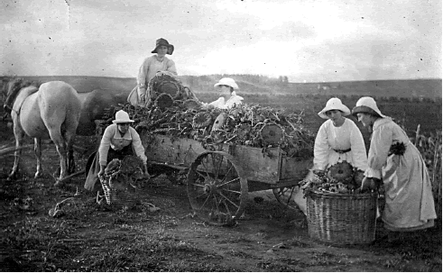
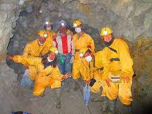
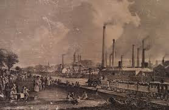
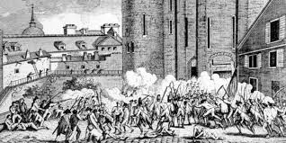
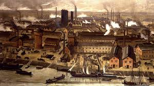

<!DOCTYPE html>
<html lang="en">
<head>
    <meta charset="UTF-8">
    <meta name="viewport" content="width=device-width, initial-scale=1.0">
    <title>mapa inicial</title>
    <link rel="stylesheet" href="https://unpkg.com/leaflet@1.9.4/dist/leaflet.css"
     integrity="sha256-p4NxAoJBhIIN+hmNHrzRCf9tD/miZyoHS5obTRR9BMY="
     crossorigin=""/>
     <!-- Make sure you put this AFTER Leaflet's CSS -->
 <script src="https://unpkg.com/leaflet@1.9.4/dist/leaflet.js"
 integrity="sha256-20nQCchB9co0qIjJZRGuk2/Z9VM+kNiyxNV1lvTlZBo="
 crossorigin=""></script>
 <link rel="stylesheet" href="./css/estilo.css">
</head>
<body>
    <div id="map"></div>
    <script>
        var map = L.map('map').setView([0, 0], 3);

        L.tileLayer('https://tile.openstreetmap.org/{z}/{x}/{y}.png', {
    maxZoom: 19,
    attribution: '&copy; <a href="http://www.openstreetmap.org/copyright">OpenStreetMap</a>'
}).addTo(map);
var circle = L.circle([-33.906896, -58,359375], {
    color: 'red',
    fillColor: 'green',
    fillOpacity: 0.5,
    radius: 500000
}).addTo(map);

var circle2 = L.circle([4.536354, -74.703175], {
    color: 'blue',
    fillColor: '#f03',
    fillOpacity: 0.5,
    radius: 3000000
}).addTo(map);
var circle3 = L.circle([-14.944785, -69.433594], {
    color: 'yellow',
    fillColor: 'yelow',
    fillOpacity: 0.5,
    radius: 500000
}).addTo(map);
var circle4 = L.circle([55.378051, -3.435973], {
    color: 'brown',
    fillColor: 'yelow',
    fillOpacity: 0.5,
    radius: 500000
}).addTo(map);
var circle5 = L.circle([48.85342, 2.3488], {
    color: 'black',
    fillColor: 'pink',
    fillOpacity: 0.5,
    radius: 500000
}).addTo(map);
var circle6 = L.circle([52.52437,13.41053], {
    color: 'orange',
    fillColor: 'black',
    fillOpacity: 0.5,
    radius: 500000
}).addTo(map);
var polygon = L.polygon([
        [-33.906896, -58,359375],
        [55.378051, -3.435973]
]).addTo(map);


var marker = L.marker([-33.906896, -58,359375]).addTo(map);
var marker2 = L.marker([4.536354, -74.703175]).addTo(map);
var marker3 = L.marker([-14.944785, -69.433594]).addTo(map);
var marker4 = L.marker([55.378051, -3.435973]).addTo(map);
var marker5 = L.marker([48.85342, 2.3488]).addTo(map);
var marker6 = L.marker([52.52437,13.41053]).addTo(map);
polygon.bindPopup("La relacion entre Inglaterra y Argentina consistia en la venta de alimentos y materias primas por parte de Argentina quien al mismo tiempo compraba manufacturas y bienes de capital como el ferrocarril  ")
marker.bindPopup("Argentina y Uruguay tienen grandes producciones agropecuarias.<br> Estos paises necesitaron un sistema ferroviario para transportar su produccion.<br>").openPopup();

marker2.bindPopup("Peru ,Chile,Mexico,Bolivia..<br>Con capitales extrangeros podian realizar las actividades mineras.").openPopup();
marker4.bindPopup("Inglaterra.<br>se dedicaban a produccion textil y de bienes de capital (ferrocarril).").openPopup();
marker5.bindPopup("Francia.<br>Francia revolucion industrial y hicieron inverciones escasa en America.").openPopup();
marker6.bindPopup("Alemania.<br>Alemania revolucion industrial y hicieron inverciones escasa en America.").openPopup();
function onMapClick(e) {

    //alert("You clicked the map at " + e.latlng);
   // (12.726084, -88.769531)
   //-14.944785, -69.433594
}

map.on('click', onMapClick);
    </script>
</body>
</html>